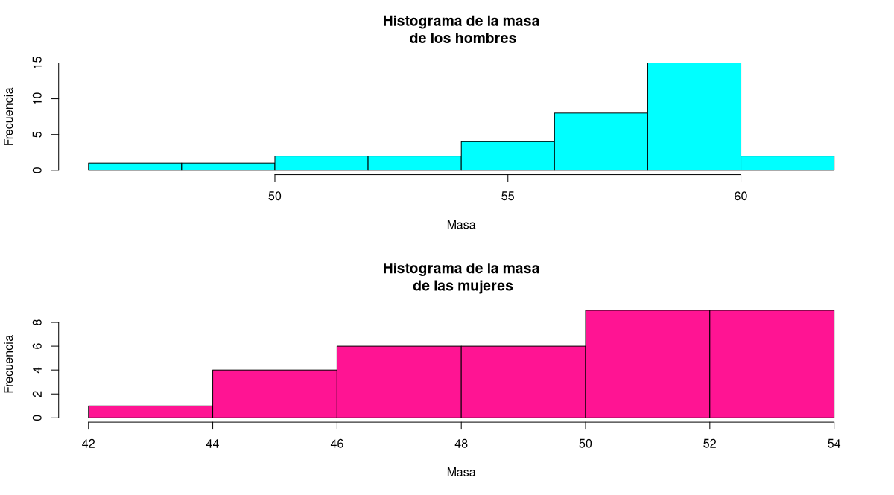
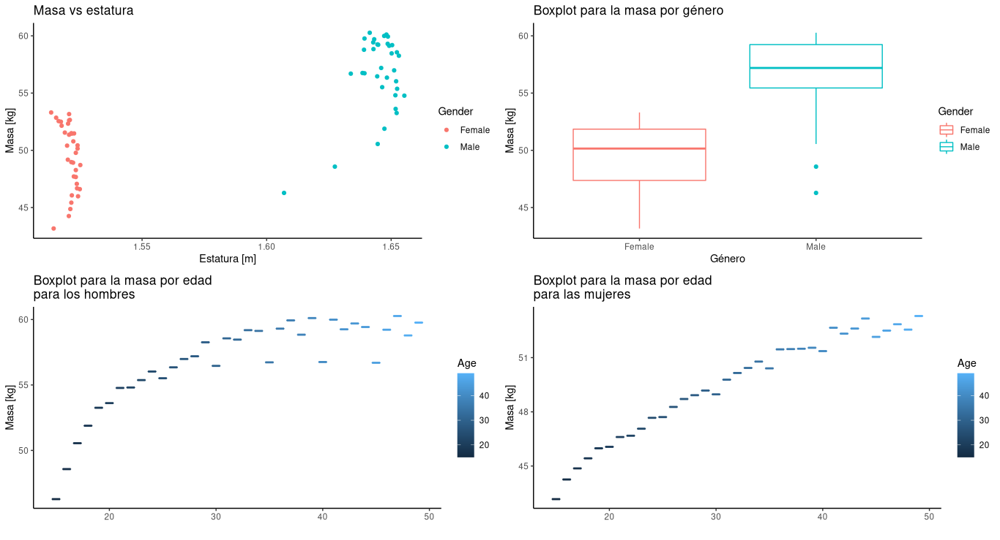

El objetivo de este póster es dar a conocer cómo fue el proceso de la búsqueda de mejorías para el modelo propuesto en el artículo científico “Application of Linear Regression Modeling on Continuous and Categorical Data using R Programming Scripts” a través de los conceptos adquiridos en el curso de análisis de regresión. Dicho esto, cabe mencionar que el objetivo es predecir la masa promedio de individuos usando como covariables la estatura, el género y la edad, esto mediante el lenguaje de programación R. Este artículo fue escrito por los autores Anurag Singh Bisht y Umang Soni.
El experimento llevado a cabo consiste en intentar predecir la masa de un individuo teniendo en cuenta factores que aparentemente son significantivos para esta y ayudan a estimarla o al menos de manera promedio, como lo son la estatura, el género y la edad. Los autores Anurag Singh Bisht y Umang Soni proponen llevar a cabo este cometido empleando datos tomados de "India, NFHS-3, 2005–06". En primera instancia, los autores deciden ajustar un modelo de regresión lineal simple únicamente con la covariable altura, sin embargo prontamente lo descartan debido a que el mismo logra explicar de manera muy pobre la variabilidad de la masa promedio. Una vez descartado el modelo anterior, ajustan un modelo de regresión lineal múltiple usando todas las covariables disponibles en sus datos, logrando mejorar de manera considerable el modelo; aumentando la proporción de la variabilidad de la masa explicada por el segundo modelo.
En primer lugar, cabe resaltar de que la distribución de la masa no es normal para ningún género, pues los histogramas para esta variable muestran asimetría negativa. Dicho esto, se puede notar que la relación entre la masa y la estatura no es lineal debido a la distribución de los puntos en la comparación entre masa y estatura, además, tanto la variabilidad en la masa como el promedio son diferentes por género, siendo los hombres quienes presentan una masa promedio mayor y las mujeres quienes poseen mayor variabilidad en su masa. Por último, se destaca el hecho de que realmente se aprecian diferencias en la masa promedio para las diferentes edades en ambos géneros, notando una tendencia al alza con el aumento de la edad.

Como se puede apreciar, se presentan seis modelos GAMLSS con el fin de explicar la masa de las personas de la India y algunas medidas de desempeño como el valor del criterio de información de Akaike (AIC), el coeficiente de correlación entre los datos y las predicciones realizadas por los modelos (Cor) y el pseduo-R² (psR²), esto con el fin de poder comparar los modelos de una manera adecuada y posteriormente seleccionar al mejor de estos. En los cuatro primeros modelos ajustados se asocian distribuciones Gamma e Inversa Gausiana a la variable respuesa, difiriendo en que en el primer modelo se utilizan edad y género en el parámetro de escala, mientras que en los tres siguientes solo se usa el género. Asimismo, en los dos últimos modelos se emplea una distribución Box-Cox Col and Green para la variable respuesa, incluyendo interacciones entre las variables cuantitativas y los factores en el primer caso para la media y en el segundo caso empleando una técnica de selección de variables propia del paquete GAMLSS.
| Reporte de modelos y medidas de rendimiento | |||||
| Modelo | Distribución | AIC | Cor | psR² | |
|---|---|---|---|---|---|
| Modelo original | Normal | 158.434 | 0.989 | 0.977 | |
| Modelo 1 | Gamma | 145.902 | 0.986 | 0.983 | |
| Modelo 2 | Gamma | 145.094 | 0.987 | 0.983 | |
| Modelo 3 | Inversa Gaussiana | 146.039 | 0.987 | 0.983 | |
| Modelo 4 | Inversa Gaussiana | 137.804 | 0.989 | 0.985 | |
| Modelo 5 | BCCGo | 139.655 | 0.989 | 0.986 | |
| Modelo 6 | BCCGo | 130.245 | 0.986 | 0.987 | |
\[\begin{equation} \begin{cases} log(\hat{\mu}) = -3.640 + 0.006312Age + 4.824Height -0.4618Male\\ log(\hat{\sigma}) = 91.199 -63.231Height + 8.672Male\\ \end{cases} \end{equation}\]
Cabe resaltar que por la gran dismunución en el criterio de Información de Akaike y el aumento en el pseduo-R², además, teniendo en cuenta el principio de parsimonia, se escoge al modelo 6 como mejor modelo entre los ajustados y el propuesto por los autores.Del análisis de residuales se tiene un gráfico en la sección superior izquierda que permite apreciar el efecto de ruido blanco, pues los puntos allí graficados se distribuyen de manera aleatoria sin ningún patrón, lo que permite notar además que existe homocedasticidad en estos. Dicho esto, cabe resaltar que el gráfico de justo a su derecha sugiere que no hay correlación entre los residuales pues se logra percibir la aleatoriedad en la distribución de los puntos. Respecto a los dos gráficos inferiores es pertinente traer a colación el hecho de que el ajuste del modelo es apropiado pues todos los puntos del gráfico inferior izquierdo residen dentro de la región de confianza y se encuentran cercanos al cero sin curvaturas pronunciadas, asimismo, se puede afirmar la normalidad en los residuales, pues no se presentan comportamientos extraños y se encuentran realmente próximos a la linea del gráfico cuantil-cuantil de la zona inferior derecha.
Se pueden observar gráficos de contorno para la masa promedio y gráficos de las curvas de la desviación para ambos géneros.
En primer lugar, se puede notar un patrón claro en todos los casos, el cual consta de un aumento en la masa con aumentos en la edad y la estatura, además de una disminución de la variabilidad a medida que crece la estatura.
Dicho esto, se puede asegurar que la distribución normal no es una selección muy adecuada para la variable respuesta pues los datos presentan sesgo y asimetría.
Por último, la flexibilidad de los modelos GAMLSS permitieron encontrar una distribución que se ajusta realmente bien a la naturaleza de los datos, logrando mejoras en la explicación de la variable respuesta como lo son una gran disminución en el criterio de Información de Akaike y un aumento en el pseduo-R².